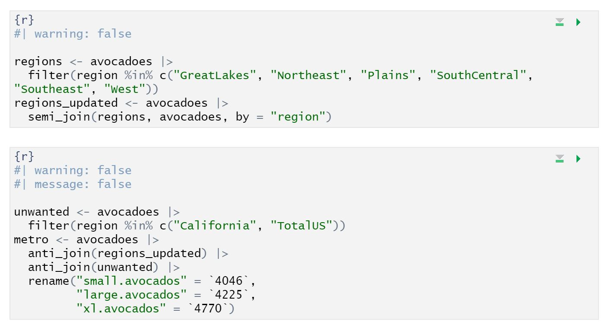

Portfolio Revisions”
Lab 4 Question 2

Lab 4 Question 6

I included these questions in my revisions because Lab 4 and the concepts associated with it were ones I particularly struggled with. I had completed revisions for Lab 4 earlier in the quarter, however I realized that there were still a number of concepts that I wasn’t understanding when I received my second round of revisions. Taking a second or third look at this question and these concepts made me realize the difference between filtering rows in a dataframe by a certain characteristic and filtering items in a vector. I realized that the point of semi and anti-join was to create a new data set and then filter the original data set by this new data set, either by including the items in the new data set or by excluding them. I was also creating a lot of intermediate data sets, which was inefficient and unnecessary. With this revision, I fixed all of those mistakes.
Lab 7 Question 1

I included this question in my revisions because it was another one I was struggling with, even during my first round of revisions. I was having a little bit of trouble with what functions to use to obtain the some of N/A values for my dataset. However, upon some editing, I realized that I only needed to use two functions to answer the question, and I could find the sum of N/A values for all of the columns efficiently using the across function. I was initially trying to condense every column by taking the mean of N/A values, but I realized that step was not necessary.